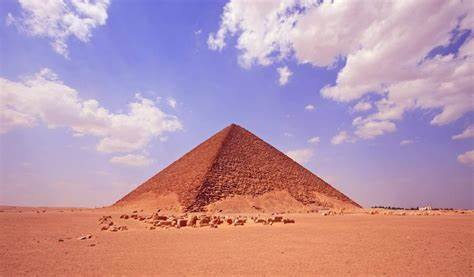

historical sites
A Tour of Civilizations
There are many civilizations, Egyptian, Babylonian, Chinese, Roman, Greek, Islamic, Greek, Sumerian
and
Assyrian civilizations.
Pharaonic civilization appeared in Egypt on the banks of the Nile, newly known as the Arab Republic
of Egypt around 3150
B.C.,Roman civilization is one of the greatest ancient European civilizations after the Greeks, and
it took control of the
Peninsula of Italy, newly known as Florence.
Aramaic civilization is their home in central and northern Syria, and the north-western part of
Mesopotamia, and their
origin dates back to The Arabian Island, and their lineage dates back to Aram bin Sam bin
Noah.Sumerian is one of the oldest civilizations that originated in Mesopotamia, and was called in
the Bible in Shamnar, and
included the south of Babylon, i.e. the south of Iraq in our time.
| Islamic monuments | Pharaonic monuments |
|---|---|
| Amr Ibn Al-Aas Mosque | Khan al khalili |
| Bashtak Palace | Museum Egyptian |
| Ahmed Bin Tulun Mosque | Luxor temple |
| Al Azhar mosque | Karnak Temple |
| Jewel Palace | The Temple of Rumisis Al -Tanali |
| Citadel of Saladin | Pyramid Khufu |
| Ali Pasha Mosque | Menkaure pyramid |
| Saqqara pyramid | |
| Sphinx | |
| Temple of Horu s | |
| Valley of the Kings | |
| Hatshepsut Temple | |
| the hanging Church |
Luxor temple

The Luxor Temple is a large temple of ancient Egyptian temples, located on the eastern bank of the Nile River in the city of Luxor today, known as (Old Taybah). It was established in the year 1400 BC. The Luxor Temple was built to the worship of Amon Ra, his wife, death and their son Khonsu; It is the depths that are also called the Tibi Trinity (Good Three). The Luxor Temple was built during the eighteenth family kings and the nineteenth family. The most important buildings in the temple are those that were built by the two kingdoms, the third (1397-1360 BC) and Ramses II (1290-1223 BC) (which was added to the temple of the open courtyard, the edifice and the two preaching). King Tuthmosis III (1490-1436 BC) also established meters for the visitors of the Tiba Al-Maqdis, and Tutankhamun (1348-1337 BC) also completed the inscriptions of his walls. The triple cabin that had been constructed before during the reign of Queen Hatshepsut and King Tuthmosis III (from the eighteenth family); Then it was rebuilt during the reign of King Ramses II. The temple was also named "Eps Rasit" (meaning the southern campus or the place of Amun Ra). It is one of the best and most beautiful Egyptian temples, in which the planning of the Egyptian temple is evident.
The date of the construction of the temple
The era of the middle state: It is possible that there was in the same region where the third was
established, the third temple, the remains of an ancient temple or a sacred cabin dating back to the era of the
middle state, and most likely it was in the era of the twelfth family.
King Aminat III: Thanks to the
construction of the temple in its current image on the eastern bank of the Nile on one axis from north to south
to
Amenotop III from the kings of the eighteenth family.
Queen Hatshepsut and King Tuthmosis III: They constructed a small building consisting of three meters
allocated
to the Tiba Tiba.
King Ramses II: King Ramses II added from the kings of the nineteenth family, a large and vicious spacious
yard
with papyrus.
Naming the temple
Apit Rast: The Egyptians called this temple the name "Ap Rast", which may mean the southern harem (where the death of Amon's wife) or the southern cabin lives ..
Valley of the Kings

About the Valley of the Kings
The Valley of the Kings is also known as the "Valley of the Bebin Kings", it is a valley in Egypt used for 500
years during the period between the sixteenth and eleventh centuries BC to construct the graves of the pharaohs
and nobles of the modern state that extends during the eighteenth family of the family to the twentieth family
in ancient Egypt, and it is located The Valley is on the West Bank of the Nile River in the face of Taibah
(currently Luxor) in the heart of the old funerary city of Taiba. The Valley of the Kings is divided into two
valleys; Eastern Valley (where most of the royal tombs are located) and the Western Valley.
With the
discovery of the last burial chamber in 2006 known as (Cemetery 63) in addition to the discovery of two other
entrances to the same room during 2008, the number of graves discovered so far reached 63 cemetery of varying
sizes, as it ranges from a small hole on the ground to a complex cemetery that contains more than 120 A burial
room inside. All of these graves were used in the burial of the kings and princes of the modern state in ancient
Egypt, in addition to some nobles and who was related to the ruling family at that time. The royal graves are
distinguished by containing drawings and inscriptions of ancient Egyptian mythology that explain religious
beliefs and memorial ceremonies at that time. And all the discovered graves were opened and looted in ancient
times, and despite this, it remained intense evidence of the power and prosperity of the kings of that time.
The Tiba hills are located in which the Valley of the Kings is located in one of the areas exposed to severe thunderstorms, and recent studies have confirmed that seven active flood paths are at the very least that are in the heart of the valley, which is the region that reports indicate that they were exposed to floods at the end of the eighteenth family era, which is what It led to the disappearance of many graves under flood deposits, which was confirmed by excavation and exploration during the discovery of both Cemetery 63, Cemetery 62 and Cemetery 55, which was revealed in the actual rocky ground of the valley, which was covered by the floods. For more than five meters from its level now. In the aftermath of the eighteenth family, the Pharaohs worked to settle the land of the valley, and then the floods gathered away from the graves area, and then these graves remained reserved until they were discovered in the late twentieth century, that flat area of the land was subject to study within the framework of the project to restore the royal graves in Amarna, which confirmed The area of the area of the area is the presence of many differences below the surface of the earth later. One of these formative differences is the recently discovered cemetery.
Explore the valley
The Valley of the Kings is one of the largest areas of archaeological exploration related to Egyptology over the
past two centuries, after it was just a tourist attraction in ancient times (especially the days of the Roman
era), as this region was a witness to the transformation that affected the methodology of studying the history
of ancient Egypt and which started From theft of antiquities and the looting of the graves until it has reached
what it has now from scientific explorations that unveiled the entire funeral city of Taibah, and despite all
these explorations, there were no more than eleven graves that were completely documented after knowing all the
details related to it and its owners.
And many graves contain inscriptions on their walls behind the tourists a long time ago, as the researcher, Jul
Paylier, identified more than 2100 inscriptions on the walls of the graves in Latin and Greek languages in
addition to a fewer number of inscriptions 9 in which nearly a thousand inscriptions were found dating back to
about 278 BC.
By 1799, the first map of the locations of the graves discovered until that time was drawn up, and this work is
due to the scholars of the French campaign against Egypt, especially the Dominic Vevent, as it was noted for the
first time the presence of the Western Valley (where both Parospir Julouh and Edward de Velier de Terra were
identified the Amenhotep III Cemetery website known as Cemetery 22 ) The description of Egypt also included two
volumes out of twenty -four volumes containing a complete debate for the observations of the campaign scholars
and their description of the area surrounding the goodness.
The European scouting campaigns continued after this date with the early nineteenth century out of the
success of Champollion in deciphering the hieroglyphic writing, so the scouting campaigns began led by Balzoni,
entrusted by Henry Solt, and indeed Balzoni was able to discover many cemeteries, including; The Cemetery of
Khukhro Rai in the Western Valley (Cemetery 23) in 1816, then City Cemetery (Cemetery 17) in the following year,
and with the end of his visit to the region, Balzoni announced that what was found during this exploratory
campaign is the maximum that can be found and nothing remains. It is valuable to excavate it, and it is reported
that in the meantime the French Consul General Bernardino Darviti (rival Balzoni and Solt) was also working
alone in the same research area.
With the re -assumption of Juston Maspero to head the Egyptian Antiquities Authority, the method of
exploration in the valley changed, as Maspero appointed Howard Carter as head of inspectors in Upper Egypt, and
the young man has already succeeded in discovering many new graves in addition to his contributions to revealing
the two cemetery 42 and Cemetery 20.
The entrance to the Cemetery of Hormis, immediately after its discovery in 1908.
With the dawn of the twentieth century, American lawyer Theodore Davis succeeded in obtaining permission to
research and exploration in the region from the Egyptian government, and his team led by British Egyptian
scientist Edward Russell Ariston succeeded in revealing many royal and non -ownership cemeteries (including
cemetery 43, cemetery 46 and cemetery 57) And they also succeeded in finding evidence of the cowardly of the
Amarna era in the cemetery 55, after which they extracted the remaining effects of Tutankhamun buried from the
two graves, Cemetery 54 and Cemetery 58, and they announced the end of exploration in the Valley of the Kings
forever and the inability to find any traces or other graves
Pyramid of Red
Pyramid of Red, also known as the North Pyramid, is the largest pyramid located at Dahshur in Giza
in Egypt. Named
because of the rusty red color of its red limestone stones, this pyramid is also the third largest Egyptian
pyramid,
after the pyramid of Khufu and Khafre in Giza. It is also believed to be the first successful Egyptian attempt
to build
a smooth-sided "real" pyramid. The locals refer to the red pyramid as the "Bat Pyramid",
The red pyramid was not always red. It was encased in white Tora limestone, but now only a few of these
stones remain at
the base of the pyramid, at the corner. During the Middle Ages, much of the white Tora limestone was taken for
buildings
in Cairo, revealing the red limestone beneath.
pyramid attribution
The reason for the attribution to Sneferu is originally due to the fact that the neighboring cemetery contained only the tombs of the officials of this king. In addition, the decision of King Pepi I, located in the valley temple, refers to the city of the pyramid of Sneferu. This attribution can be confirmed, because in the area of the accompanying temple, a limestone block with remains of hieroglyphs was found in this place, in the name of King Horus: Neb-Maat (one of the royal titles of King Sneferu) (‘nb-m3ˁ.t’).
exploration
Della Vallee gave the first description of the first two rooms of the pyramid when he visited the pyramid in the winter of 1615/1616. Edward Melton visited the Red Pyramid in 1660, as did the Bohemian Franciscan missionary Vaclav Remedios Protky in the 18th century. Robert Wood, James Dawkins, and Giovanni Battista Porra conducted a preliminary survey in 1750, but were unable to reach the burial chamber since they did not have a proper staircase.
Early in the archaeological exploration of the Red Pyramid were the investigations of John Chee Bering in 1839 and the Prussian Lipsius Expedition in 1843. The pyramid was cataloged by Carl Richard Lepsius in Lipsius' List of the Pyramids. This was followed by studies by Flinders Petrie and George Reisner. From 1944, more detailed research followed Abd al-Salam Husayn and from 1951 Ahmed Fakhry. However, this work has not been published. It was not until 1982 that a thorough and systematic investigation was carried out by Rainer Stadelmann.
The pyramid complex was in a restricted military zone until the mid-1990s and is currently the site of several excavations. A labor settlement of builders and a cemetery were found in the area.
Date
The Red Pyramid is the third pyramid built by King Sneferu, and is located approximately one kilometer north of the Leaning Pyramid of Sneferu. It was built at the same shallow 43-degree angle as the top of the curved pyramid, giving it a distinctly seated appearance compared to other Egyptian pyramids of similar size. It is believed that construction began during the thirtieth year of the reign of Sneferu (about 2590 BC). Egyptologists disagree about the length of time it took to build. Based on quarry marks found in various stages of construction, Rainer Stadelmann estimates the time of completion to be around 17 years while Rolf Krause, based on this graffiti, suggests a period of 10-11 years of construction, an estimate later supported by John Romer (Egyptologist ).
Archaeologists speculate that its design may have been the result of engineering crises that occurred during the construction of the previous Sneferu pyramids. The first, the Pyramid of Meidum in Meidum, collapsed in antiquity, while the second, the bent pyramid of Sneferu, its angle of inclination changed dramatically from 54 to 43 degrees through masonry.
Some archaeologists now believe that Meidum's pyramid was the first attempt to build a smooth pyramid, that it may have collapsed when construction of the curved pyramid had already begun - and that by then the pyramid may already have begun to show disturbing signs of instability in itself, as Evidenced by the presence of large wooden beams supporting its interior rooms. The result of this was a change in the slope of the curved pyramid, and the later starting of the red pyramid at a slope known to be less prone to instability and therefore less prone to catastrophic collapse.
The modern era
The height of the Red Pyramid is 105 meters (344 feet). A rare pyramid, or coronation stone, of the Red Pyramid was uncovered and reconstructed, and is now on display in Dahshur. However, it is unclear whether it was actually used at all, as the angle of its inclination differs from that of the pyramid it was supposed to use.
The Red Pyramid, along with the leaning pyramid of Sneferu, has been closed to tourists for many years due to the presence of an army camp nearby. It is usually open to tourists and a somewhat intrusive ventilation has been installed so that the air is directed down the entrance shaft into the inner rooms. Visitors climb the stairs cut or built over the stones of the pyramid to a high entrance on the north side. A corridor, 3 feet (0.91 m) high and 4 feet (1.2 m) wide, slopes down at 27 degrees for 200 feet (61 m) into a short horizontal corridor that leads to a room whose arched ceiling is 40 feet (12 m) high and rises in one ten degrees. At the southern end of the room, but to the west, another short horizontal corridor leads to the second room. This passage may have been closed at one time and the displacement was an action intended to confuse potential thieves.
The second room is similar to the first room and is located directly under the top of the pyramid. There is an entrance at the top of the room's south wall, now accessed by a large wooden staircase built for the convenience of tourists. This gives a short horizontal corridor that leads to the third and final room with a 50 ft (15 m) archedceiling. The first two rooms have a long axis aligned north-south, but the long axis of this room is aligned Between East and West. In contrast to the first two rooms, which had smooth smooth floors at the same level as the corridors, the floor of the third room was very rough and sunk below the level of the access corridor. This is believed to be the work of thieves searching for treasure in what is believed to be the pyramid's burial chamber.
pyramid
The pyramid rests on a foundation made of several layers of high-quality limestone from Tora. On the other hand, the core of the pyramid is made of reddish limestone blocks that were extracted from quarries in the immediate vicinity of the pyramid. The current name of the red pyramid comes from the coloring of this substance. Inscriptions with dates have been found on several blocks of built material.
red pyramid structure The founding block is dated to "The Year of the Fifteenth Count of Cattle," the most recent inscription in the "Year of the Twenty-fourth Count of Cattle." Based on the information found, one can conclude - provided that a census of cattle is taken every two years - that about one-fifth of the pyramid was built within two years. However, the two-year cycle of the cattle census is not undisputed.
The pyramid was built using improved techniques already used at the top of the leaning pyramid of Sneferu. The stone layers were now horizontal from the beginning, so that the pressure inside the pyramid did not increase, which led to cracks and the danger of collapse of the chambers inside the leaning pyramid of Sneferu. As for the upper side surfaces, the angle of inclination is now set to less than 44 degrees. John Shay Bering gives it 43° 36' 11", based on the remaining stones of the cladding, with a basic dimension equal to 219.3 m and a height of 104.4 m m. This angle defined by Bering corresponds to an ancient Egyptian angle of 7.35 sec, i.e. a tangent of 7 / 7.35 ( = 20/21.Using this angle of inclination, a height similar to that of a curved pyramid of about 105 m (200 cubits) can be achieved by greatly increasing the length of the base to about 220 m (420 cubits).The lateral surfaces of the pyramid core have a slightly concave crease. It extends upward from the center of the base.This would improve the stability of the cladding attached to it.Unlike previous buildings, the pyramid was completed without any changes to the plan.
In 1982, R. Stadelmann discovered pyramid fragments in the ruins of Dahshur in front of the eastern side of the pyramid, which are considered to be the oldest of all those found so far and like only two others from the Egyptian Fourth Dynasty pyramid of the Old Kingdom. The reassembled and restored pyramid is now placed in the precinct of the mortuary temple in front of the Red Pyramid, and consists, like the cladding of the pyramid, of fine Tora limestone. It is made of a monolithic block and measures a cubit (about 1.57 m) at its base, the sides have an angle of inclination of about 54°, which is not exactly symmetrical. This pyramid is much steeper than the remaining remnants of the Red Pyramid or the upper part of the adjacent older pyramid, the Pyramid of Sneferu (about 43°) and is as steep as its lower part. There are neither inscriptions nor references to the attachment of the metal plates, which according to Herodotus' report are said to have been on the edges of the pyramids.
Infrastructure
Room tidying
All the corridors and rooms of the red pyramid are located above the base of the pyramid in the heart of the bricks. It is the first and only pyramid that does not have underground passages. The reason may lie in the increasing identification of the king with the sun god Ra, however, for purely practical reasons, the acceleration of work on the pyramid by dispensing with the underground components can be conceivable. Although the rooms are above ground, they are built on shallow pits at a depth of about 10 meters
pyramid entrance
The entrance to the pyramid is located on the north wall at a height of 28 meters and is moved 4 meters from the central axis to the east. The descending passage leads down 62.63 meters at an angle of 27 degrees to the base of the pyramid. This trail has a height of 0.91 meters and a width of 1.23 meters. At the foot of the descending corridor is a short shaft that was supposed to prevent rainwater from entering the rooms during construction. From there, a short horizontal corridor leads to the first antechamber. Stone fall barriers are not available.
The two waiting rooms have identical dimensions. With a length of 8.36 meters and a width of 3.65 meters, the eleven level cantilevered vaults rise to a height of 12.31 meters. In terms of design and visual impact, it is the forerunner of the Great Exhibition of the Pyramid of Khufu. From the southwest corner of the first antechamber a 3-meter corridor leads to the northeast corner of the second antechamber, which is exactly in the middle of the pyramid. At a height of 7.6 meters on the south side of the chamber is the entrance to another 7-meter corridor that leads to the actual burial chamber. The wooden staircase in the second antechamber is a modern construction to enable visitors to enter the burial chamber.
The actual burial chamber dimensions are 8.55 m x 4.18 m with a height of 14.67 m with a height of 14.67 m. Unlike the two antechambers, they are oriented in the east-west direction, which was an innovation in the construction of the pyramid. No coffin remains have been found. The room itself was badly damaged by tomb robbers who tore several layers of floor stones. The ceilings and walls are black with soot, which may be due to the torches and the possibility of the wooden coffin being burned by grave robbers. When it was reopened by Bering, the room was partially covered with limestone, which probably came from a Ramesside restoration. When the room was cleaned by Abdus Salam Hussain in 1950, both masonry and loose stones were removed from the floor and lost without documentation. Follow-up examinations by Stadelmann can no longer provide any information about the remains of the original chamber contents
down gearConstruction of the cantilevered roof for the first antechamber
Passage from the second room to the first waiting room
The floor of the burial chamber is damaged
pyramid complex
Unlike other pyramids of the Fourth Dynasty, the Red Pyramid does not have a cult pyramid. This item may have been excluded ,because the nearby leaning pyramid of Sneferu assumed its function as a symbolic southern tomb.
The remains of the temple road have not yet been found, although it was certainly planned between the valley and the mortuary temple. However, this may not have been completed or even begun.
A larger brick building was found southeast of the complex, which apparently housed workshops. The remains of a furnace were also found there
perimeter wall
During the excavations of Stadelmann, the remains of a mud brick building were found in the northeastern corner of the pyramid, which was directly adjacent to a wall also made of mud bricks. The exact purpose of the building has not yet been determined, but the association with the cult of the ruler is clear.Further exploratory excavations could prove the surrounding wall around the pyramid. Part of the wall was covered with limestone. The distance between the wall and the pyramid varies from four sides: 15 to 16 meters on the northern and southern sides, 19 meters on the western side and 26 meters on the eastern side. Unlike the curved pyramid wall, it is not square, but slightly from east to west. Stadelmann interprets the fact that the wall was built of adobe rather than limestone like a curved pyramid as evidence that it was built in a hurry to complete the complex. The northeastern building appears to have been a later addition, as the walls were not connected to the perimeter wall.
mortuary temple
Funeral structure of the Red Pyramid The mortuary temple has been largely destroyed and has only been preserved in the form of a few primitive ruins. It is not yet the size of the funerary temples of the later pyramids. In the center of the temple was an offering site with a false door in the inner temple. A memorial plaque as with the older Sneferu pyramids cannot be discovered here. There was a stone chapel on either side of the open courtyard. It is no longer possible to determine whether these chapels were stand-alone buildings or were combined with the courtyard and inner temple to form a building complex. The courtyards to the north and south of the temple contain circular depressions, which may have once been used as plant pits or for offerings. The magazine rooms in the outer area of the temple were made of adobe. It appears that the mortuary temple was not hastily completed until after the death of Sneferu, which is evidenced by the change in building materials from limestone to mud bricks.
Valley Temple
During agricultural work in the spring of 1904, the remains of a 100 m x 65 m limestone fence wall were discovered. In the southeast corner of the walls was a memorial plaque with a decree of the pharaoh Baby I Ludwig Borchardt, who secured the stele, holding this find to the wall surrounding the pyramidal city. Stadelmann sees it as the perimeter of the valley temple, since the walls of the pyramidal cities (except at Giza) were made of adobe. The wall that was found is 3.65 square meters thick, made of yellow limestone, and the white sloping facades on both sides correspond in its execution to the sacred architecture. However, there have been no further systematic investigations and the remains cannot now be accessed on farmland.